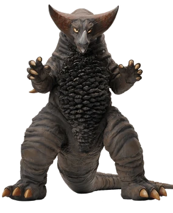
Monster purba yang sangat kuat dengan serangan andalan "Mega-ton Tail".
Tipe: Acient Monster (Kodai Kaiju)
Asal: Pulau Johnson
Debut Pertama: Ultraman eps.26
Status: Iconic
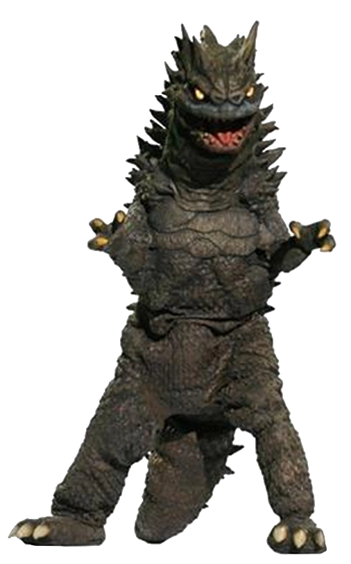
Narapidana galaksi yang kabur dan menjadi lawan pertama Ultraman di bumi.
Tipe: Space Monster (Uchu Kaiju)
Asal: Galaksi M78 (Tahanan)
Debut Pertama: Ultraman eps.1
Status: Legend
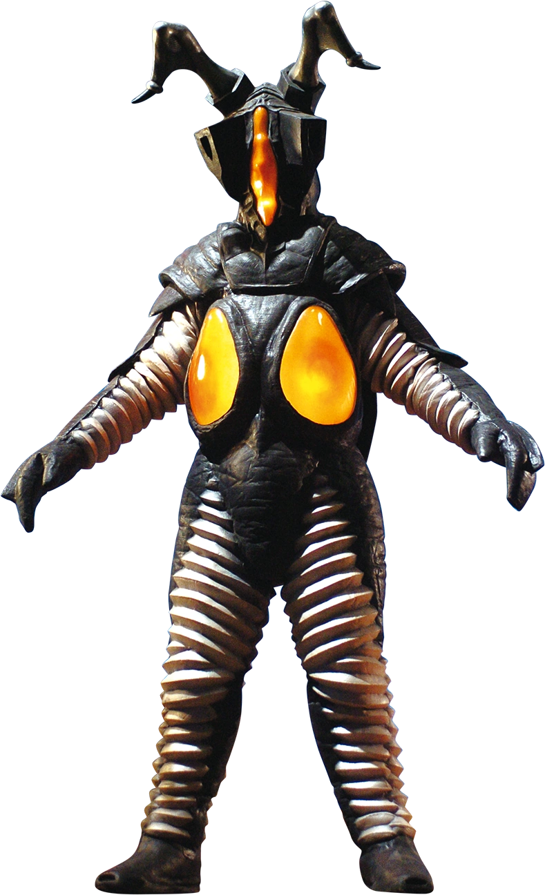
Senjata biologis terkuat milik alien Zetton yang berhasil mengalahkan Ultraman hayata.
Tipe: Space Dinosaur (Uchu Kyoryu)
Asal: Luar Angkasa
Debut Pertama: Ultraman eps.39
Status: Ultra Killer
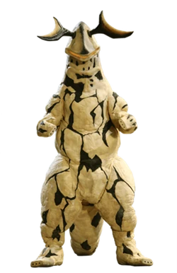
Monster listrik yang dikendalikan oleh alien Pitt, dikenal dengan ekor panjangnya yang mematikan.
Tipe: Space Monster (Uchu Kaiju)
Asal: Planet Pitt
Debut Pertama: Ultraseven eps.3
Status: Populer
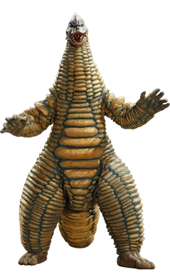
Monster brutal yang mengandalkan kekuatan fisik murni dan lemparan batu.
Tipe: Skull Monster (Dokuro Kaiju)
Asal: Pulau Tatari
Debut Pertama: Ultraman eps.8
Status: Brutal Brawler
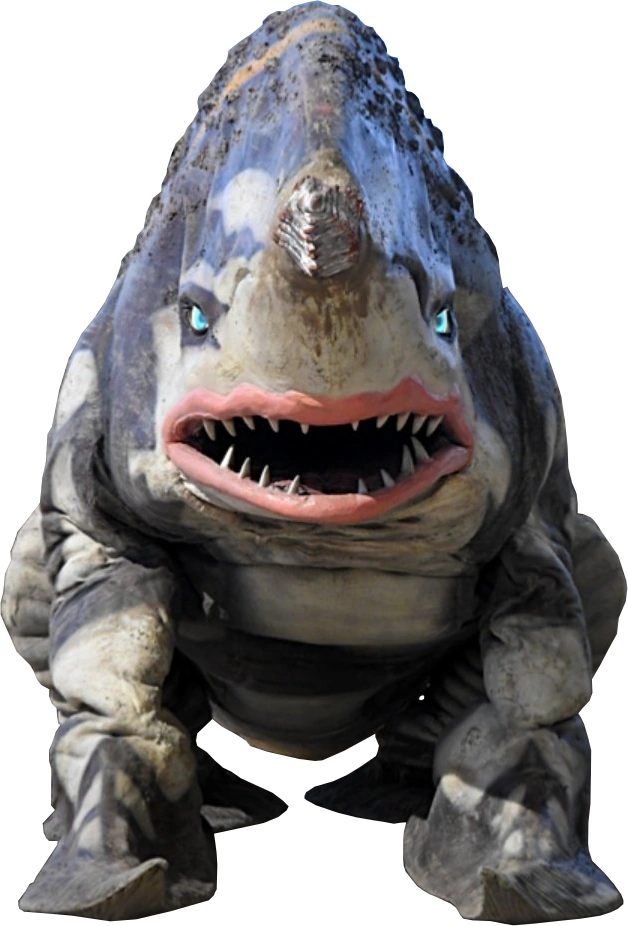
Monster laut dengan hidung berbentuk bor yang bisa menggali tanah maupun menyerang lawan.
Tipe: Deep sea Monster (Shinkai Kaiju)
Asal: Dasar Laut
Debut Pertama: Ultraman eps.24
Status: Aktif
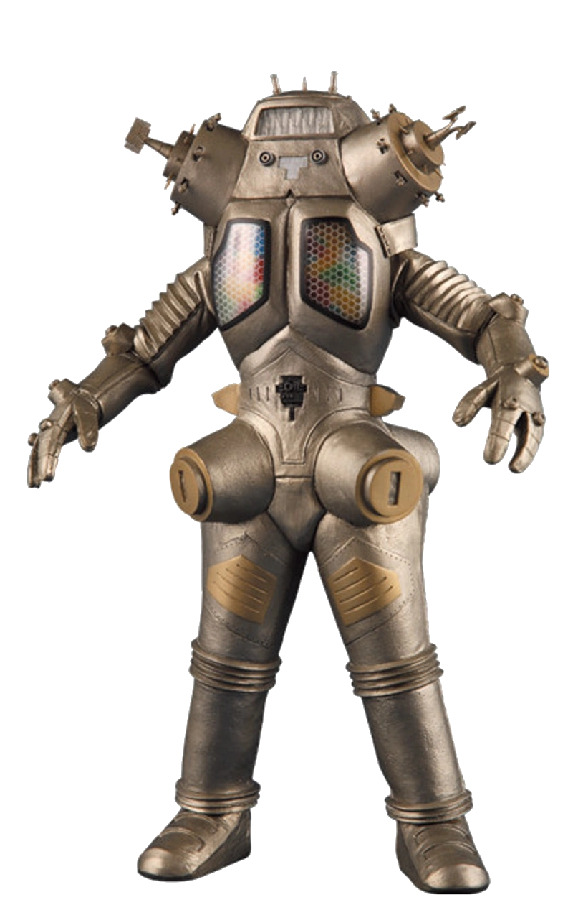
Robot super kuat yang bisa berpisah menjadi empat pesawat tempur.
Tipe: Space Robot (Uchu Robot)
Asal: Planet Pedan
Debut Pertama: Ultraseven eps.14
Status: Elite Machine
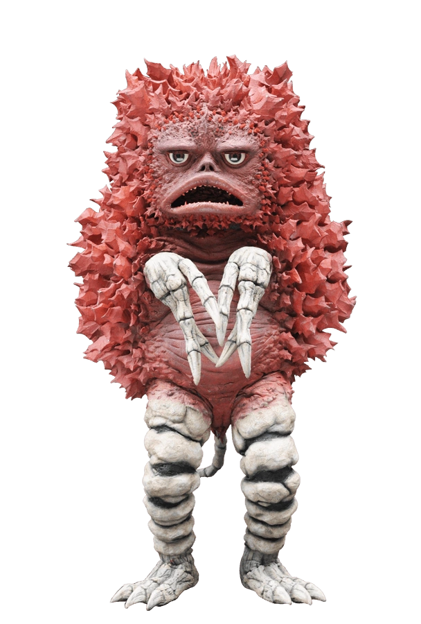
Kaiju kecil yang baik hati dan sering membantu manusia.
Tipe: Friendly Monster (Yuko Kaiju)
Asal: Pulau Tatari
Debut Pertama: Ultraman eps.8
Status: Hero Mascot
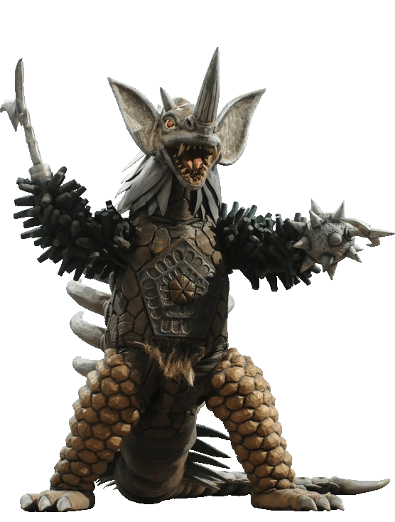
Monster gabungan (Chimera) dari tujuh monster yang mengalahkan Ultra Brothers satu per satu.
Tipe: Combined Monster (Gattai Kaiju)
Asal: Luar Angkasa
Debut Pertama: Ultraman Taro eps.40
Status: Ultra Brothers Killer
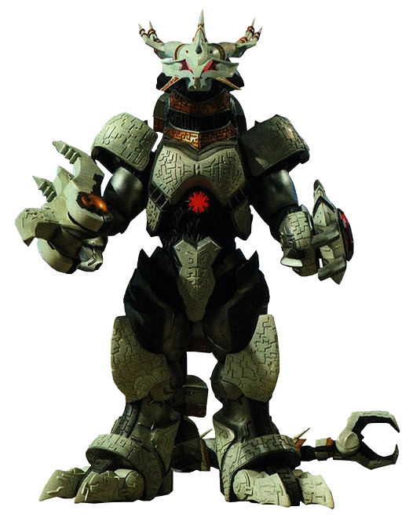
Naga mekanis dari dimensi lain yang bertujuan "meriset" planet untuk perdamaian ekstrem.
Tipe: Civilizing Destroyer
Asal: Dimensi Lain
Debut Pertama: Ultraman Orb eps.14
Status: High-tier Threat
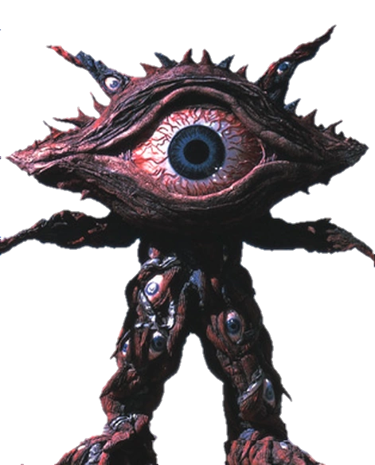
Monster berbentuk mata raksasa yang bisa menyerap serangan dan menyimpan musuh di dimensi dalam perutnya.
Tipe: Odd Beast (Kiju)
Asal: Energi Negatif Manusia
Debut Pertama: Ultraman Gaia eps.6
Status: Surreal Monster
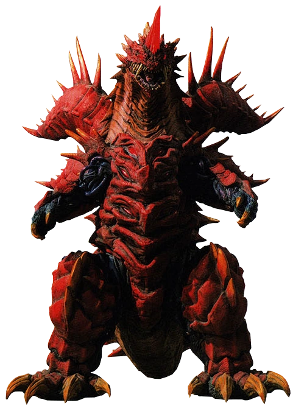
Monster legendaris yang memakan energi planet, inkarnasi dari kegelapan murni.
Tipe: Great Lord Monster (Dai Mo Kaiju)
Asal: Luar Angkasa
Debut Pertama: Ultraman Orb eps.11
Status: Calamity Class
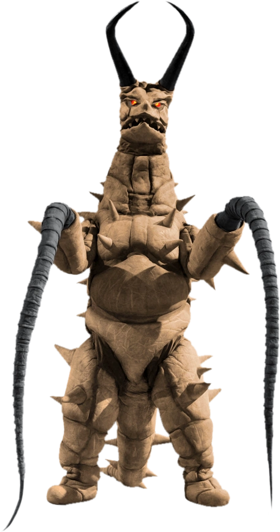
Predator bawah tanah yang memiliki cambuk dikedua lengannya, musuh alami Twin Tail.
Tipe: Underground Monster (Chika Kaiju)
Asal: Bawah Tanah
Debut Pertama: Return of Ultraman eps.5
Status: Predator
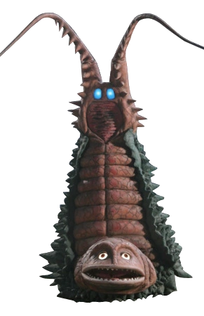
Monster unik yang kepalanya berada di bawah dan memiliki dua ekor panjang di atas.
Tipe: Acient Monster (Kodai Kaiju)
Asal: Bawah Tanah
Debut Pertama: Return of Ultraman eps.5
Status: Prey
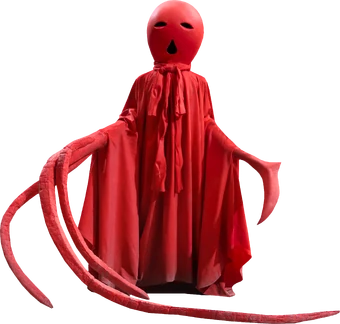
Monster berbentuk seperti boneka teru teru bozu yang menyebarkan gas merah penyebab kegilaan.
Tipe: Saucer Monster (Enban Kaiju)
Asal: Planet Black
Debut Pertama: Ultraman Leo eps.49
Status: Creepy Legend
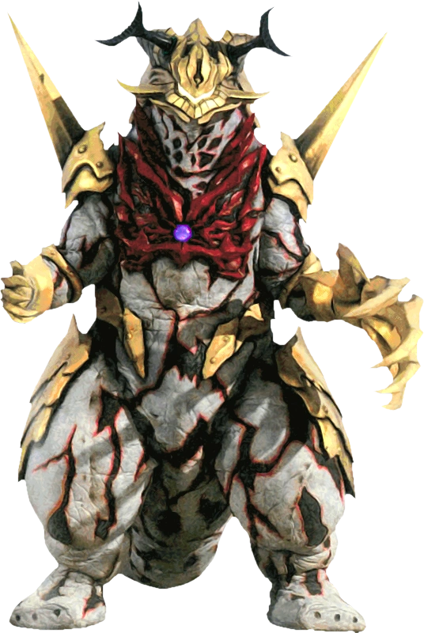
Monster gabungan yang tercipta dari kekuatan Ace Killer dan Eleking. Ia memiliki kemampuan menyerap energi lawan dan melepaskan serangan listrik yang sangat destruktif.
Tipe: Belial Fusion Beast
Asal: Hasil Fusion
Debut Pertama: Ultraman Geed eps.5
Status: Fusion Monster
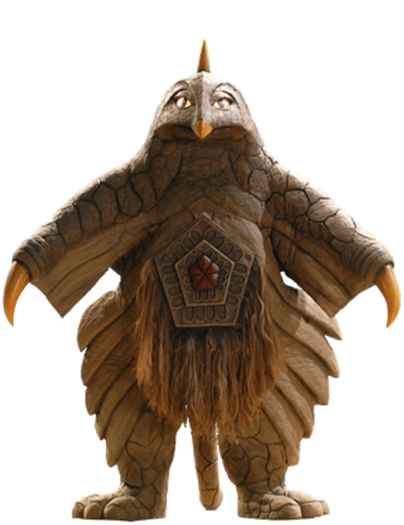
Monster luar angkasa yang memiliki mulut di perutnya untuk menghisap energi dan gas.
Tipe: Space Monster (Uchu Kaiju)
Asal: Galaksi Kani
Debut Pertama: Return of Ultraman eps.18
Status: Energi Eater
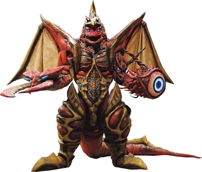
Monster gabungan super yang terdiri dari Golza, Melba, Gan Q, Reicubas, dan super C.O.V.
Tipe: Combined Monster
Asal: Fusion Distorsi Ruang-Waktu
Debut Pertama: Ultraman Ginga S eps.7
Status: Ultra Boss
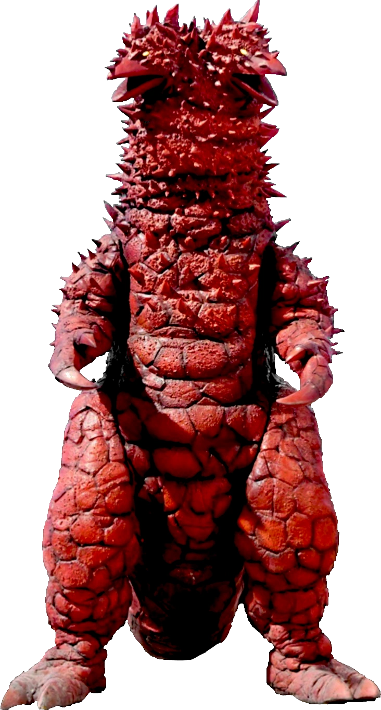
Monster berkepala dua yang dikirim oleh alien Ghos sebagai senjata terakhir melawan Ultraseven.
Tipe: Space Monster (Uchu Kaiju)
Asal: Planet Ghos
Debut Pertama: Ultraseven eps.48
Status: Final Opponent
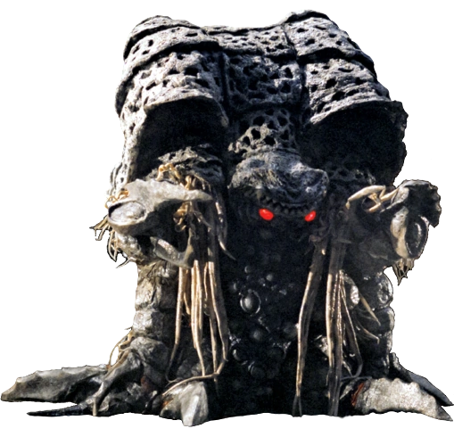
Dewa kegelapan kuno yang menenggelamkan peradaban Ultra kuno ke dalam kegelapan.
Tipe: Evil God (Jashin)
Asal: R'lyeh
Debut Pertama: Ultraman Tiga eps.51
Status: Final Boss
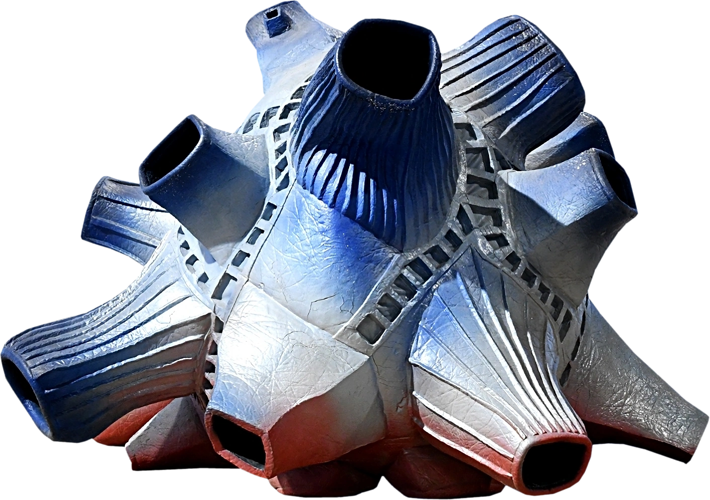
Kaiju berbentuk batu aneh yang merupakan gabungan dari dua meteorit (biru dan merah). Ia memiliki kemampuan memanipulasi dimensi, ruang, dan waktu.
Tipe: 4th Dimensional Monster
Asal: Luar Angkasa
Debut Pertama: Ultraman eps.17
Status: Alive
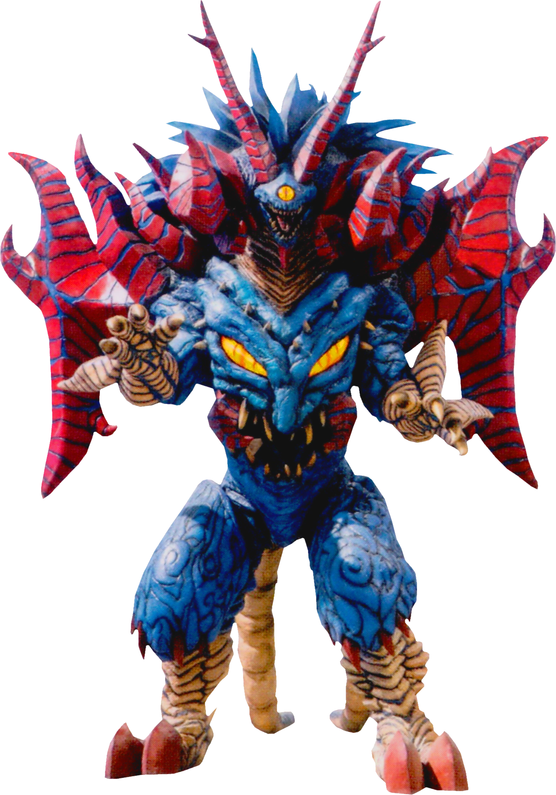
Entitas dewa jahat kuno yang merupakan sumber kekuatan gelap luar biasa.
Tipe: Evil God (Jashin)
Asal: Ruang Hampa
Debut Pertama: Ultraman Taiga The Movie
Status: Deceased
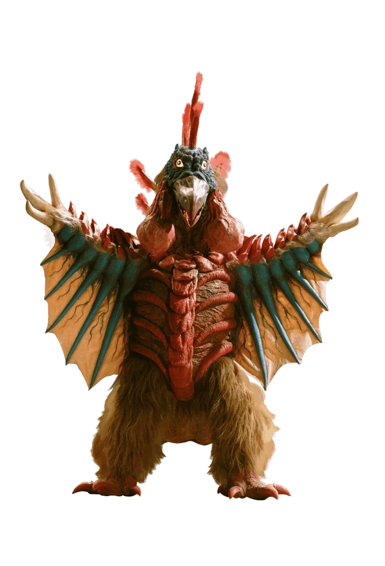
Burung raksasa ganas yang mampu mengalahkan Ultraman Zoffy dan Taro sekaligus.
Tipe: Volcanic Bird Monster
Asal: Gunung Oomuro
Debut Pertama: Ultraman Taro eps.17
Status: Extinct
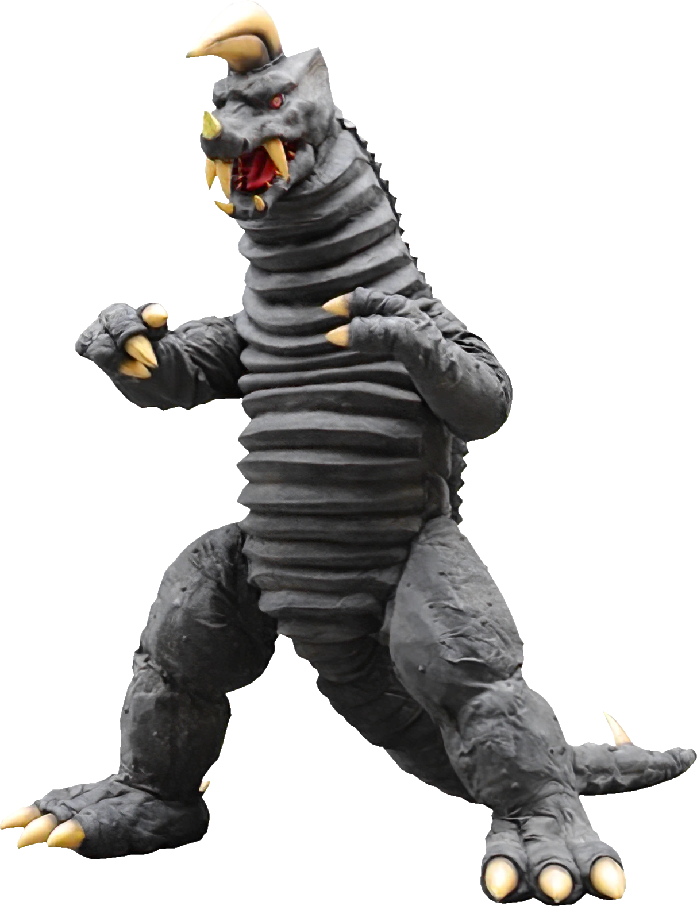
Monster pengawal pribadi yang digunakan oleh Alien Nackle dilatih khusus untuk tahan laser.
Tipe: Bodyguard Monster
Asal: Planet Nackle
Debut Pertama: Return of Ultraman eps.37
Status: Deceased